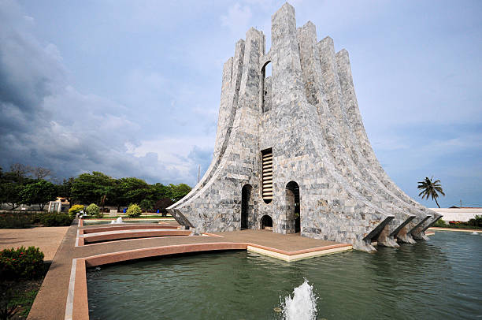
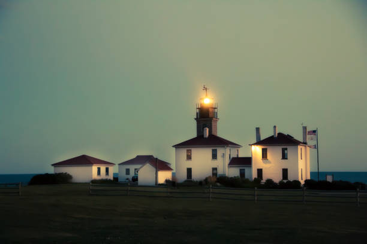
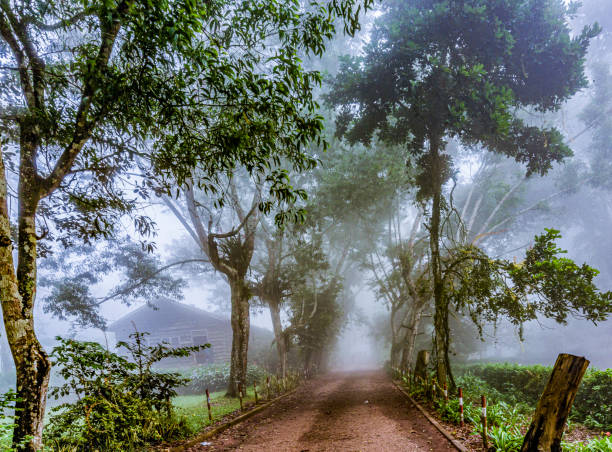

Famous Landmarks in Accra

Nkrumah Mausoleum
The final resting place of Ghana's first President, surrounded by scenic gardens.


Jamestown Lighthouse
A historic lighthouse providing panoramic views of the city and the Gulf of Guinea.

Aburi Botanical Gardens
A lush green space perfect for picnics and nature walks, located in the Eastern Region of Ghana.